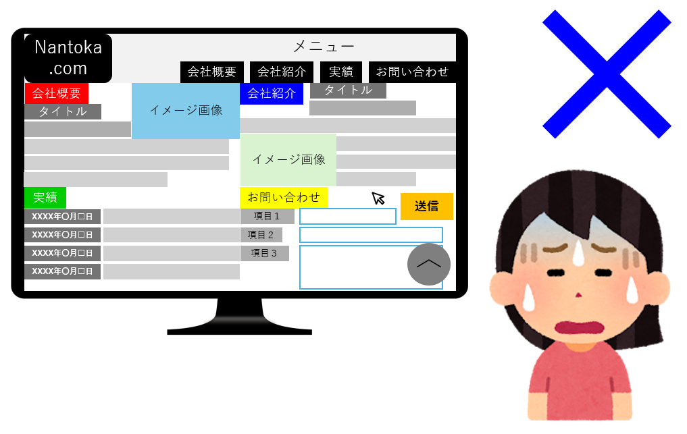
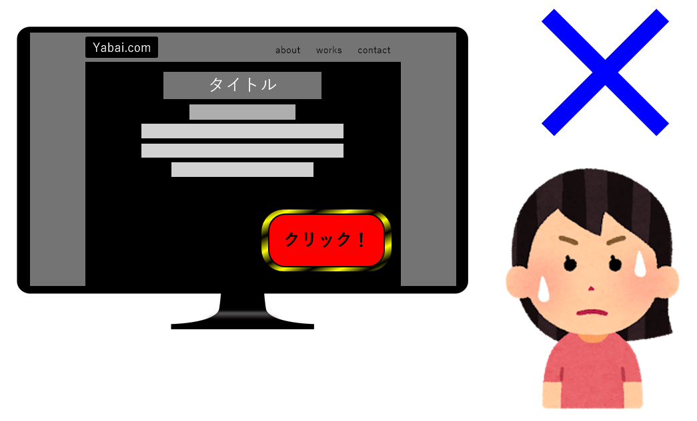

私たちは「ubiquitArs」と申します！
名前の由来は、説明するのが少し恥ずかしいですが、ラテン語の「ubiquitous（ユビキタス）： どこにでも在る、偏在する」と「ars（アルス）： 技術、芸術」をつなげてもじったものです。
ubiquitArsでは、主にシステム開発を生業としており、「いつでも、だれでも使えるシステム」を作ることを念頭に、日々、開発・業務に取り組んでいます。
また、「いつでも、だれでも使えるシステム」を作るために、以下を大事にしています。
- ・ ユーザビリティ
- ・ 会話のインターフェース化
- ・ 物事の細分化
- ・ だれでも理解できる作り方
- ・ 幅広い興味
わかりにくいと思うのでもう少し細かく説明します。
大雑把に表現すると、「見え方」と「操作性」です。
「見え方」というのは、ユーザーがアプリやサイトを開いてみたときにいかにストレスがないか、きれいかといった点です。
アプリやサイトの内容にもよりますが、圧迫感があったり、ごちゃごちゃした画面はあまり見たくありませんよね。

「操作性」というのは、ボタンを作るときのことで例えると、そのボタンを押したときにどういったアクションができるのか、直感的にわかるような配置・デザイン・テキストにすることです。
押したら何が起こるかわからない、爆発するかもしれないボタンは押したくないですよね。

簡単に言うと、「関係者内で共通の言葉を使うことを心掛けること」です。
業務でシステム開発を行う場合、まず１人ですべてを行うことはあり得ません。少なくとも要望を持ち掛ける人と、要望を実現する人の２人以上が関わると思います。
システムを作っていく上で、関係者間で話している言葉とその言葉に対するお互いの認識が違っていると、結果的に要望にそぐわないものが出来上がってしまいます。このようなことを防ぐためになるべく共通理解がある言葉を使い、共通理解がなさそうな言葉を使うときはお互いの認識を合わせつつ話を進めることを心掛けています。
自分の知識をただ振りまいているような横文字ばかり話している人に依頼したら、なんかよくわからないものが出来上がりそうですよね。
読んで字の如く、「物事をできるだけ細部まで落としこむこと」です。
「ジュースを買いに行く」という例えで説明します。一見すると単純な話なのですが、細部に落とし込んでみると下記のような見方もできます。
① 立ち上がる
② 財布を持つ
③ 家を出る
④ エレベーターで１階まで下りる
⑤ エントランスを出て左に２００ｍすすむ
⑥ 左に自動販売機が見えたら止まる
⑦ 自動販売機に２００円入れる
⑧ コカ・コーラを買う
きりがないのでここまでにしますが、単純見える事象も、細部まで考えてみると多くの手順が発生しています。
普通に生活しているうえではこのようなことを考えても意味はありませんが、システム開発を行う上では「問題点はどこかを考えるとき」などで重要になってきます。
また、上記順序を見ると、あることが不足しているのがわかると思います。
そうです。「ジュースを買いに行く人の状態」です。システム開発を行う際、この「状態」についても細部まで考えています。
この「細分化」ができていないと、「動かしてみないとわからない」「思っていたのと違った」といった問題が発生します。
ここまで聞くと、「面倒なことまで考えてて開発に時間かかっていそう」と思われるかもしれませんが、初期の開発段階でここまで考えることによって、後々、時間もお金も損をせずに済みます。
部分的にはなりますが、簡単に説明すると「なぜこのように作ったのか、修正するときにどこを編集すればいいのか」を理解できるように作ることです。
目先の期日ばかりを考えて作業をしていると、「現段階では動くシステム」が出来上がり、追加要件が発生した際に修正に鬼のように時間がかかり、「依頼者へ思わぬ金額の請求が発生する」といった状況になりかねません。
そんな事態を招かないためにも、「だれでも理解できる作り方」を心掛けています。（具体的にどんなことをしているかは、、、ヒミツです）
また、この「だれでも理解できる作り方」は組織強化や省コスト化にも役立っています。
簡単に説明すると、「今関わっていることだけでなく、ジャンルの異なる様々な事象を見たり、聞いたりしているか」です。
システムを作っていると、視野が狭くなってしまうことが時折あります。そんな時、多方面に手を付けていると、問題発生時に様々な改善策を出すことができたり、お客様と話すときにすぐにわかりやすい表現ができたりします。
そのため、ubiquitArsは一見したら変に見えるところまで、多方面に興味を持つことを大事にしています。
と、お客様のためにも、組織（？）のためにもいろいろ書かせていただきましたが、「直近の目標」を見ていただいてわかる通り、まだ業務を請け負ったことなく、私１人で組織とも言えない変な名前を名乗っているだけの者でございます。
もし、記事を読んで「一緒に活動したい」と思った方、ご連絡いただけるととてもありがたいです。。。
読み飛ばしていただいて結構なのですが、自己紹介をさせていただきます。
改めまして、私、瀧と申します。
現在20代、東京都内でしがないサラリーマンをやっております。
一応IT業界で、システムの導入と保守の対応を行っております。まだまだ分からないことだらけで、正直、「他から仕事なんて請け負っている場合ではない。」です。
しかし、僭越ながらゆくゆくは自身で仕事を請け負って、フリーランス、もしくは、自分が選んだ仲間と一緒にシステム開発を行いたいと考えております。そのためにも、システム開発について様々な知識を取り込んでいる最中でございます。